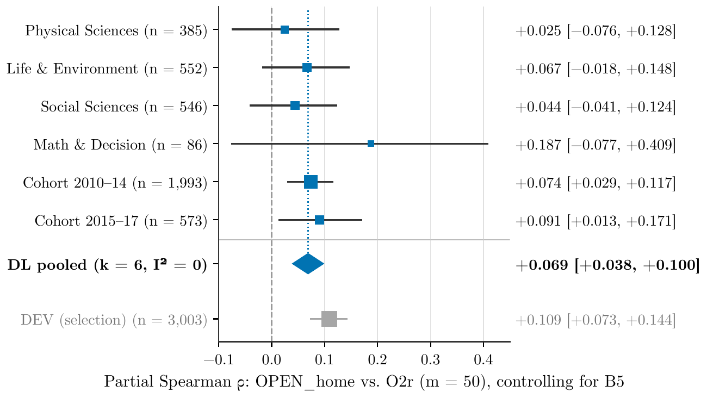
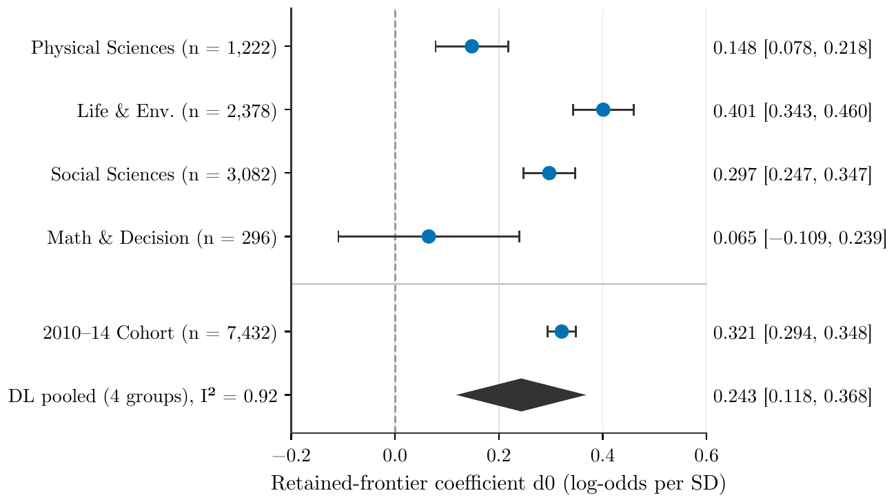
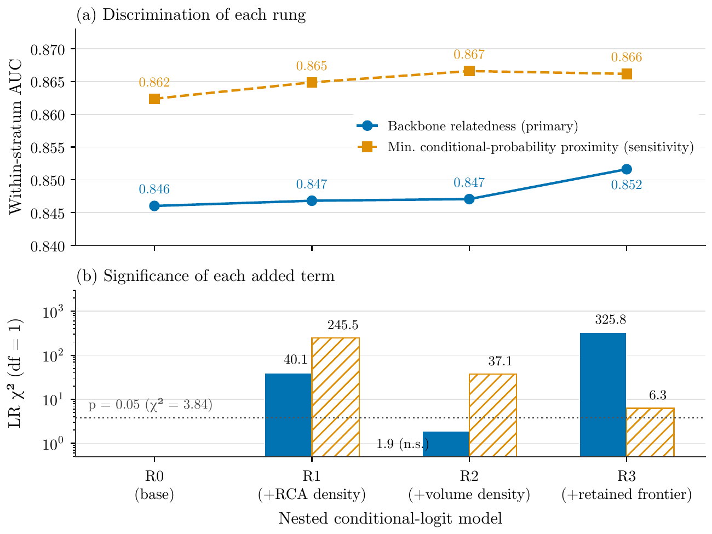
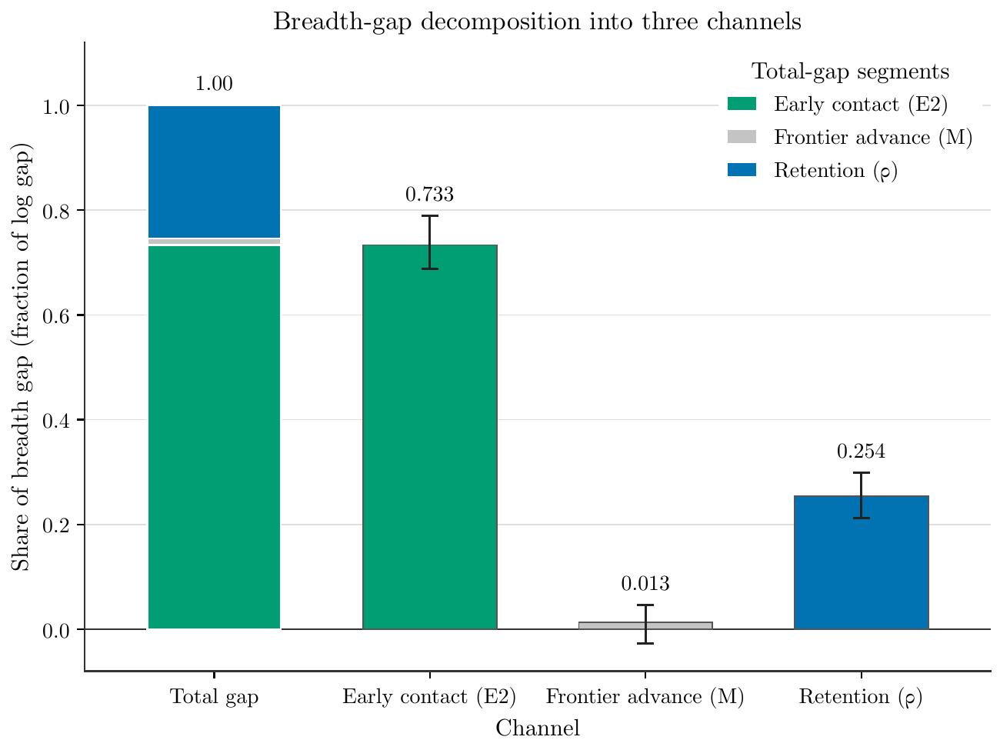

Concepts spread where they stick: network signals of interdisciplinary diffusion in science
Which early signals in a scientific concept's co-occurrence network predict how broadly it will spread across fields? Using 12,499 concepts from the full OpenAlex snapshot (476 million works), this study finds that seven network indicators survive held-out validation for predicting size-adjusted cross-field breadth, and that concepts spread next to fields related to the ones currently retaining them (conditional-logit coefficient d0 = 0.322 [0.291, 0.355]). Seventy-three percent of the breadth gap between broadly integrating and locally absorbed concepts is set by early contact diversity, not by continued frontier advance.
Contributions
Seven validated network indicators for cross-field breadth
Of 53 early co-occurrence network indicators screened against a five-feature popularity baseline, seven survive held-out validation with Holm-Bonferroni correction across four domain groups. A learned ElasticNet combining them exceeds the baseline by +0.059 [+0.046, +0.073] in Spearman correlation for predicting rarefied cross-field breadth.
Retained-frontier hypothesis confirmed
Concepts spread next to fields related to the ones currently retaining them. On 3,162 held-out concepts the conditional-logit coefficient is d0 = 0.322 [0.291, 0.355], positive in all four domain groups. This extends the principle of relatedness from economic geography to scientific concept diffusion, with the novel element that retention, not merely initial adoption, predicts the next field of entry.
Breadth is set early by contact diversity
A decomposition of the breadth gap between integrating and localised concepts shows that 73% is early contact diversity, near 0% is frontier advance, and 25% is differential retention. The gap is set in the first two years after a concept's onset, not by later expansion.
Consistency predicts volume, not breadth
Ideational consistency, previously shown to predict next-year publication volume, has a negative partial Spearman with cross-field breadth: −0.069 [−0.093, −0.047]. Concepts whose neighbourhoods are consistently structured tend to grow in volume rather than spreading across fields. The reversal holds in all five domain groups.
Replication on a fresh cohort and vocabulary-free phrases
The openness signal replicates on a 2015–2017 onset cohort of 1,443 concepts (partial Spearman +0.091 [+0.013, +0.171]) and on 636 newborn title noun phrases absent from the legacy lexicon (+0.117 [+0.020, +0.218]).
Method
Data. The study uses the full OpenAlex bulk snapshot: 476,196,327 works, with 129.4 million base works from 1995 to 2022. Concepts are identified by Aho-Corasick title matching of 56,643 legacy OpenAlex concepts (levels 2–5) plus Wikidata aliases, with stemmed verification and a per-concept precision gate dropping concepts below 0.80 precision (benchmark precision 0.947, recall 0.659). A concept's onset year is the first year it reaches 20 grounded publications. The frame comprises 12,499 concepts and 27,393 adoption episodes.
Held-out design. The panel is split by home-field family into a development set (DEV: Computer Science, Engineering, Biochemistry/Genetics/Medicine; 4,771 concepts), four held-out domain groups (Physical Sciences 742, Life and Environment 1,113, Social Sciences 1,352, Mathematics and Decision Sciences 165), and a 2010–2014 onset cohort (4,356 concepts, all fields). Specifications were hash-sealed on DEV before held-out scoring.
Outcome. The primary outcome is rarefied cross-field breadth O2r (m = 50): the expected number of distinct venue fields among a fixed-size random draw of 50 papers from a concept's publications in years t0+6 to t0+8, computed by exact hypergeometric rarefaction. This separates size-adjusted breadth from sheer volume.
Indicators. Fifty-three indicators span seven families: popularity, disciplinary composition, landing position, retained frontier, co-occurrence ego network (27 indicators including neighbourhood novelty, edge persistence, community count, ego density, participation coefficient, brokerage), author overlap ties, and external recognition. All are computed in the t0 to t0+2 window. (Code: Which early network signals of new topics travel)
Baseline. The five-feature popularity baseline (log publication volume at t0+2, publication growth rate, log off-home volume, off-home share, and number of home fields) alone reaches Spearman correlations of 0.65–0.86 with O2r across domain groups, setting a high bar for incremental network indicators.
Selection and validation. Indicators are screened on DEV by partial Spearman correlation with O2r given the popularity baseline, using leave-one-home-group-out cross-validation with 2,000 bootstrap resamples. The top 10 frozen indicators per outcome are evaluated on held-out groups with DerSimonian-Laird random-effects pooling and Holm-Bonferroni correction for multiplicity.
Retained-frontier model. A conditional-logit model (Breslow partial likelihood), stratified by concept-year, tests whether retained-field relatedness predicts the next field a concept enters, beyond relatedness to the home field, field size, entered-field density and gateway centrality. Four nested rungs add terms incrementally: RCA-based density, volume-weighted density, and retained-frontier relatedness. (Code: Do concepts spread from fields that keep them?)
Breadth decomposition. The gap in retained off-home breadth between top and bottom O2r terciles is decomposed into three multiplicative factors: early contact E2 (fields entered by t0+2), frontier advance M (ratio of fields at t0+8 to those at t0+2), and retention ratio ρ (share of entered fields retained at t0+8). (Code: How concepts spread: early reach vs keeping fields)
Results
Confirmed indicators
Seven of 53 screened indicators survive held-out validation with Holm-Bonferroni correction, all positive in six of six non-selection evaluation bodies.
| Indicator | Family | Pooled ρ | 95% CI | I2 |
|---|---|---|---|---|
| Cumulative density of entered fields | FR | +0.375 | [+0.279, +0.462] | 0.74 |
| Volume-weighted density | FR | +0.307 | [+0.256, +0.356] | 0.10 |
| Contact reach (off-home fields entered) | FR | +0.211 | [+0.161, +0.261] | 0.00 |
| Communities among co-occurrence neighbours | A | +0.167 | [+0.063, +0.267] | 0.78 |
| Neighbourhood novelty | A | +0.151 | [+0.044, +0.255] | 0.75 |
| Retention ratio of contacted fields | FR | −0.114 | [−0.160, −0.067] | 0.00 |
| Ego network density | A | −0.102 | [−0.151, −0.053] | 0.00 |
A learned ElasticNet combining the confirmed indicators exceeds the popularity baseline by +0.059 [+0.046, +0.073] in Spearman correlation on the pooled held-out set. Held-out increments by domain group: Physical Sciences +0.050, Life and Environment +0.059, Social Sciences +0.062, Mathematics and Decision Sciences +0.037. (Code: Do open-neighbourhood concepts spread? Fresh-cohort test)
Openness composite
The six ego-network components compose into an openness index (OPEN). On a fresh 2015–2017 onset cohort of 1,443 concepts, OPEN measured within the home field shows a partial Spearman of +0.091 [+0.013, +0.171] with O2r at the second control rung. The DerSimonian-Laird pool across six non-selection bodies is +0.069 [+0.038, +0.100] with I2 = 0. All six non-selection estimates are positive. The selection body (DEV) estimate of +0.109 is 1.58 times the pooled estimate, consistent with winner's-curse shrinkage. (Code: Record repair and openness evidence pool)
The signal is topical dispersion, not temporal churn
Four confound analyses confirm that the openness signal reflects topical non-redundancy of the home neighbourhood, not temporal partner turnover. Raw edge persistence is 66% explained by its own temporal-permutation null mean. The temporal excess on neighbourhood novelty is +0.008 with split-half reliability below 0.05. The configuration-model null leaves ego density predictive (partial Spearman −0.091), confirming the signal is structural. (Code: Why churning concepts spread; Exp11 test completed)
Retained-frontier entry
On the held-out frame (3,162 concepts, 6,978 entry events), the retained-frontier coefficient is d0 = 0.322 [0.291, 0.355], with likelihood ratio 325.8 for the retained-frontier term over the volume-density rung (p < 10−72). The result is positive in all four held-out domain groups: Physical Sciences 0.148, Life and Environment 0.401, Social Sciences 0.297, Mathematics and Decision Sciences 0.065 (underpowered). The DerSimonian-Laird pool over four groups gives 0.243 [0.118, 0.368] with I2 = 0.92.
The predeclared volume-matched contrast is null: −0.028 [−0.105, +0.046]. The frozen verdict is therefore partial: persistence is confounded with volume. (Code: Where new scientific concepts spread next)
Breadth decomposition
The gap in retained off-home breadth between the top and bottom O2r terciles decomposes into three multiplicative channels (volume-stratified, held-out pool excluding Medicine, n = 1,825 concepts):
- Early contact: 73.3% [68.8%, 78.9%]
- Frontier advance: 1.3% [−2.7%, 4.7%]
- Retention: 25.4% [21.3%, 29.8%]
Breadth differences between concepts are set by how many fields a concept contacts early. Both broad and narrow concepts gain new fields at similar rates relative to their base, so frontier advance contributes near zero.
Consistency versus breadth
Ideational consistency predicts next-year volume with a +53.5% increase per standard deviation, reproducing Cheng et al. (2023) almost exactly. Adding log current volume reduces this to +1.3% [+0.5%, +2.1%]: the raw association is size-dominated. Net of size, consistency's partial Spearman with rarefied breadth is −0.069 [−0.093, −0.047], negative in all five domain groups and replicated on the 2015–2017 cohort at −0.111 [−0.197, −0.030]. (Code: Cheng's consistency: size effect, not reach)
Diffusion trajectories: a continuum, not types
No discrete trajectory typology passes a naming rule: the adjusted Rand index between DTW k = 4 and HMM S = 5 is 0.222, and held-out reclustering gives ARI = 0.44. PCA reveals a continuum: the first component (38.8% of variance) is a breadth axis, the second (10.7%) a keep-versus-lose axis. Early openness correlates with the first component beyond the popularity baseline (held-out DerSimonian-Laird partial correlation 0.120, I2 = 0).
Vocabulary-free replication
On 636 newborn title noun phrases absent from the 56,643 legacy concepts, OPEN within the home field shows a partial Spearman of +0.117 [+0.020, +0.218] at the third control rung, and neighbourhood novelty of +0.108 [+0.007, +0.211]. Three of four estimable domain groups are positive. The p-value after Holm-Bonferroni correction is 0.052. (Code: Does the churn signal hold for brand-new phrases?)
Figures




Limitations
- Concept identification relies on title matching against a legacy lexicon that overrepresents the natural sciences and computer science. The vocabulary-free replication partially addresses this, but its sample is smaller and the verdict is partial.
- The field backbone uses a fixed classification of 26 fields from OpenAlex. A finer-grained classification would produce more adoption episodes but also more noise in field assignment.
- The retained-frontier claim is partial by its own preregistered rule: the volume-matched contrast is null, meaning that the effect of retention cannot be distinguished from that of volume at this sample size.
- The openness signal's practical forecasting value is small (+0.002 Spearman on the fresh cohort). The indicators characterise structural preconditions for broad diffusion rather than yielding individually actionable forecasts.
- Outcomes are measured at t0+6 to t0+8, a horizon of 6–8 years after onset. Longer horizons might reveal different dynamics.
- The analysis is observational. Early network structure is correlated with later breadth, but causation is not established. Panel analysis suggests the association is a trait across concepts, not a mechanism within a single concept's trajectory.
- The held-out outcomes were previously unsealed by two earlier experiments, so the indicator-screen results are robustness checks rather than fully independent confirmations. The 2015–2017 cohort is the only body never used in any prior step.
- Mathematics and Decision Sciences is underpowered in both the indicator screen (165 concepts) and the retained-frontier model (d0 = 0.065, CI includes zero), so results may not generalise to this domain.
All experiment and analysis code
- Does citing a concept 'as your own' predict its spread?
- Do diverse topic ties predict concept spread?
- Where a concept lands early vs how broadly it spreads
- Do hub fields keep new concepts? Held-out test
- Where new scientific concepts spread next
- Does the gateway-field retention signal replicate?
- When research concepts were officially recognised
- How our results compare with related papers
- Do concepts spread from fields that keep them?
- Which early network signals of new topics travel
- Auditing the record before the paper
- Is 'fields that keep it' new? Prior art and venue check
- Do open-neighbourhood concepts spread? Fresh-cohort test
- How concepts spread: early reach vs keeping fields
- Record fixes and openness robustness tests
- Is 'keep exploring, spread widest' already known?
- Does the churn signal hold for brand-new phrases?
- Cheng's consistency: size effect, not reach
- Why churning concepts spread; Exp11 test completed
- Record repair and openness evidence pool
- Is research-topic churn real or small-sample noise?